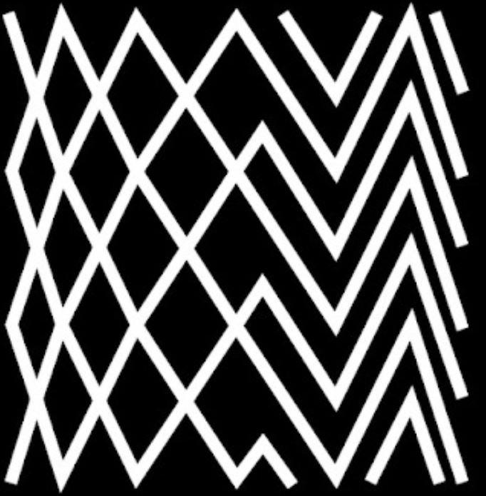
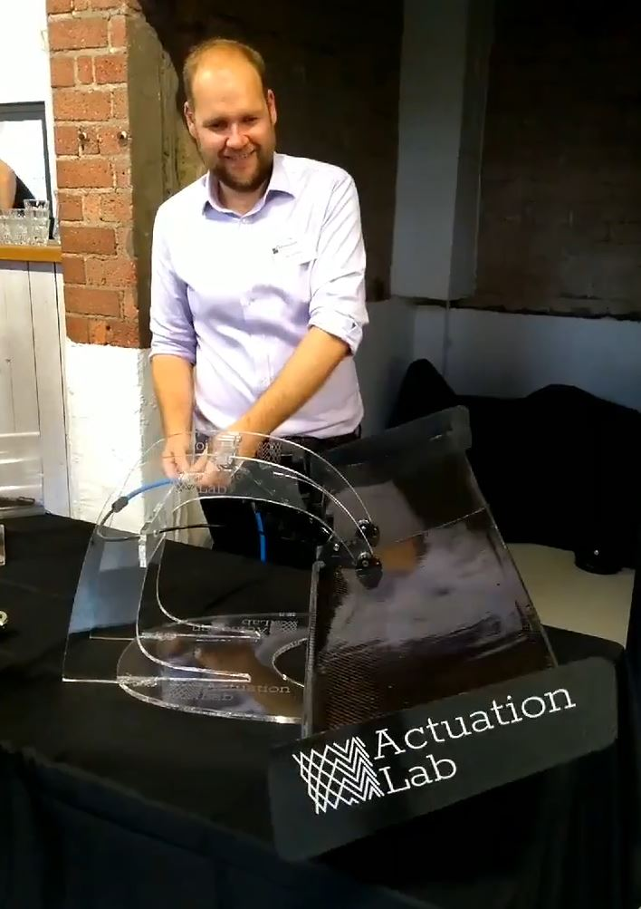
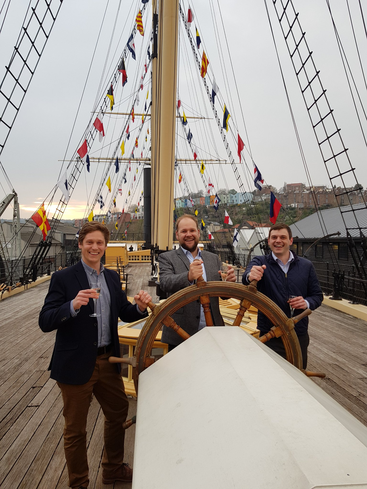
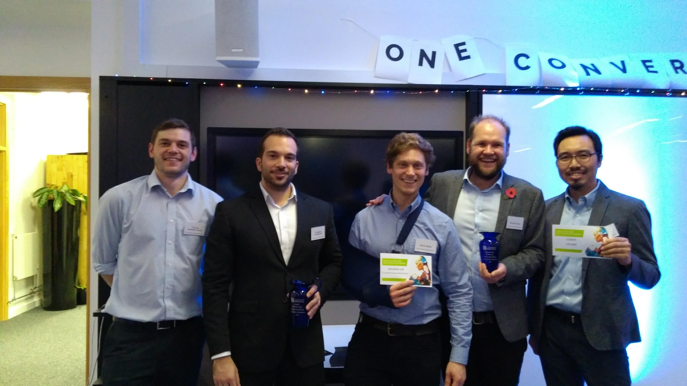

Actuation Lab are seeking investment to support the development of actuators for extreme environments. The funding will cover an 18 month period, and will allow Actuation Lab to accelerate technical development and produce our first commercially ready actuators.
News


CTO Michael Dicker travelled to Melbourne, Australia to attend the 22nd International Conference on Composite Materials. Discussions with leading composites experts helped us to improve techniques in our manufacturing process.

We are delighted to announce that we have secured follow-on support from the ICURe program, and have been invited to apply to a closed Innovate UK grant fund. The ICURe panel were please with the market validation performed by CEO Simon Bates, and have recommended the business for spin-out.

At the end of 3 months of market validation, CEO Simon Bates pitched to the ICURe panel for follow-on funding and support. The whole team travelled to Belfast for the event, including our Technology Transfer Officer Dr Lauren Ellse (pictured far left) and Business Adviser Pete Stirling (pictured one from right).

Actuation Lab were excited to exhibit our novel approach to creating fluid powered actuators in public for the first time at SETsquared Bristol’s annual Tech-Xpo. With attendees consisting of potential clients, investors, partners, and influential business leaders this event was invaluable in expanding our network, and we even made the trophy for the best pitch award.

Actuation Lab members joined University of Bristol PhD Students to teach the working principles of hydraulic actuation using a varitety of syringe-powered robot arms at the Makershack in Cheltenham Science Festival 2019.

Actuation Lab are thrilled to announce that we are celebrating setting sail on the next leg of business development having been awarded ICURe funding!

CTO Michael Dicker was invited to represent Actuation Lab and take part in a panel discussion on 'Working for Tech Start-ups' as part of University of Bristol career service's 'Tech-Week'. The event was attended by around 40 undergraduate students from the university, keen to find out about career opportunities with emerging tech companies in Bristol.

Actuation Lab has started at SETsquared Bristol, based in Brunel’s historic Engine Shed. It is regarded at the world’s number one university-linked business incubator . As a new member we had the opportunity to do an introductory pitch at the festive connect event sponsored by Hazlewoods Innovation.

Actuation Lab attended the Materials Research Society Conference in Boston last week. This is a giant annual conference, and a must-attend for those that work with novel materials. This year a specific symposium was held on materials for next generation robotics including some great talks of relevance to us. A highlight was meeting the team behind the HASEL actuators, a very different technology to our own. We also had an opportunity to present to the Human Computer Interaction group at MIT, which was a great opportunity to get more opinions on our technology.

Actuation Lab was delighted to receive the runner’s up prize in the Bristol New Enterprise Competition, which will give us 12-months of membership to the world’s number one University business incubator, SETsquared . We would like to thank all the sponsors of the event, and congratulate the winners and colleagues (pictured) of ours in composite research, iCOMAT.

The Actuation Lab 3D printed actuator design tool was presented to researchers from a variety of UK universities. It was great to see interest in our technology from the wider 3D printing community.

Actuation Lab visited the International Robotics Showcase in Liverpool, the pinnacle event of UK Robotics Week 2018, to meet exhibitors and see the launch of white papers in Urban Automation & Transport as well as robotics in AgriTech. A highlight for us was meeting the team from React Robotics and their 3D printed ‘dog-bot’.

Actuation Lab was successful in receiving funding in the second round of the University of Bristol’s annual New Enterprise Competition (sponsored by Santander). The funding will be used to continue prototype development and to continue visiting potential clients around the UK to further validate the business.